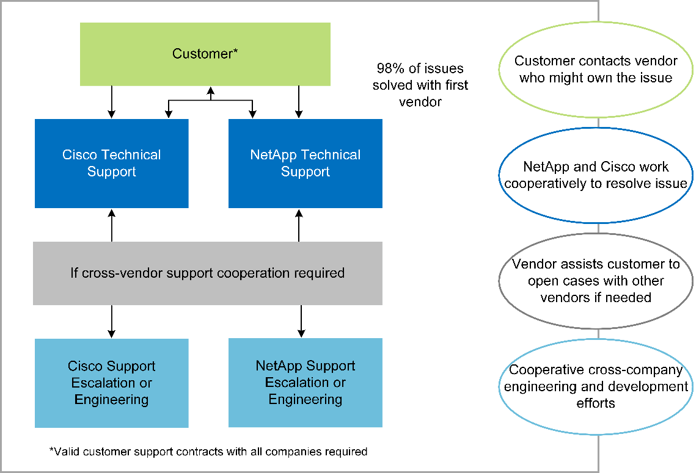

Dokumentationsänderungen beantragen
Dokumentationsänderungen beantragen In GitHub bearbeiten
In GitHub bearbeiten Leitfaden für Beitragende
Leitfaden für BeitragendeTR-4753: FlexPod-Datacenter for MEDITECH Deployment Guide
Beitragende
Brandon Agee und John Duignan, NetApp Mike Brennan und Jon Ebmeier, Cisco
In Zusammenarbeit mit:
Gesamtvorteile der Lösung
Durch den Aufbau einer MEDITECH-Umgebung auf dem Architekturfundament von FlexPod kann Ihr Gesundheitsunternehmen eine Verbesserung der Mitarbeiterproduktivität und eine Verringerung der Investitions- und Betriebskosten erwarten. Das FlexPod Datacenter für MEDITECH bietet verschiedene für das Gesundheitswesen spezifische Vorteile:
-
Vereinfachter Betrieb und geringere Kosten. Kosten und Komplexität älterer Plattformen werden eliminiert, indem sie durch effizientere und skalierbarere gemeinsame Ressourcen ersetzt werden, die das Klinikpersonal überall unterstützen können. Diese Lösung bietet eine höhere Ressourcenauslastung und damit einen höheren ROI.
-
* Schnellere Bereitstellung der Infrastruktur.* ob bereits ein Rechenzentrum oder ein Remote-Standort, mit dem integrierten und getesteten Design von FlexPod Datacenter können Sie Ihre neue Infrastruktur mit weniger Aufwand in kürzerer Zeit einsatzbereit haben.
-
Zertifizierter Storage. NetApp ONTAP Datenmanagement-Software mit MEDITECH bietet Ihnen die überlegene Zuverlässigkeit eines getesteten und zertifizierten Storage-Anbieters. MEDITECH zertifiziert keine anderen Infrastrukturkomponenten.
-
Scale-out-Architektur SAN und NAS von Terabyte (TB) auf Petabyte im zweistelligen Bereich (PB) skalieren, ohne laufende Applikationen neu zu konfigurieren.
-
Unterbrechungsfreier Betrieb. Durchführung von Storage-Wartungen, Hardware-Lebenszyklusoperationen und FlexPod Upgrades ohne Unterbrechung des Geschäftsbetriebs
-
Sichere Mandantenfähigkeit. Unterstützung der gestiegenen Anforderungen an eine virtualisierte Shared IT-Infrastruktur für Server und Storage, die eine sichere Mandantenfähigkeit von kundenspezifischen Informationen ermöglicht, insbesondere wenn Ihr System mehrere Instanzen von Datenbanken und Software hostet.
-
Ressourcenoptimierung in Pools Reduzierung der Anzahl physischer Server und Storage Controller, Load-Balancing der Workload-Anforderungen, Steigerung der Auslastung bei gleichzeitiger Performance-Verbesserung
-
* Quality of Service (QoS).* FlexPod bietet QoS auf dem gesamten Stack. Branchenführende QoS-Netzwerk-, Computing- und Storage-Richtlinien ermöglichen differenzierte Service-Level in einer gemeinsam genutzten Umgebung. Diese Richtlinien ermöglichen optimale Performance für Workloads und helfen, unkontrollierte Applikationen zu isolieren und zu kontrollieren.
-
Storage-Effizienz Storage-Kosten senken mit dem "NetApp „7:1 Storage-Effizienz“-Garantie".
-
Agilität. mit den branchenführenden Tools für Workflow-Automatisierung, Orchestrierung und Management von FlexPod Systemen kann Ihr IT-Team viel schneller auf geschäftliche Anforderungen reagieren. Diese Geschäftsanforderungen können von MEDITECH-Backups und Bereitstellungen von mehr Test- und Schulungsumgebungen bis zu Analysedatenbanken-Replikationen für Population Health Management-Initiativen reichen.
-
* Höhere Produktivität.* Schnelle Bereitstellung und Skalierung dieser Lösung für ein optimales Anwendererlebnis im Klinikpersonal.
-
NetApp Data Fabric. mit der NetApp Data-Fabric-Architektur werden Daten über Standorte, physische Grenzen und Applikationen hinweg zusammengeführt. NetApp Data Fabric wurde für Unternehmen in einer datenorientierten Welt entwickelt. Daten werden an diversen Orten erstellt und verwendet. Häufig sind eine Nutzung und die gemeinsame Nutzung an anderen Orten, Applikationen und Infrastrukturen erforderlich. Daher benötigen Sie eine Möglichkeit, Ihre Daten konsistent und integriert zu managen. Die Data-Fabric-Strategie bietet ein Datenmanagement, mit dem DIE IT-ABTEILUNGEN die Kontrolle behalten. Gleichzeitig wird die ständig zunehmende Komplexität IM IT-BEREICH verringert.
FlexPod
Neuer Infrastrukturansatz für MEDITECH EHRs
Gesundheitsdienstleister Unternehmen wie Ihres stehen unter Druck, um die Vorteile umfangreicher Investitionen in branchenführende elektronische Gesundheitsdaten (EHRs) von MEDITECH optimal zu nutzen. Wenn Unternehmen ihre Rechenzentren für MEDITECH-Lösungen entwerfen, werden für geschäftskritische Anwendungen häufig die folgenden Ziele für ihre Datacenter-Architektur identifiziert:
-
Hohe Verfügbarkeit der MEDITECH-Anwendungen
-
Hohe Performance
-
Einfache Implementierung von MEDITECH im Rechenzentrum
-
Agilität und Skalierbarkeit, um mit neuen MEDITECH-Veröffentlichungen oder -Anwendungen Wachstum zu ermöglichen
-
Auch die Wirtschaftlichkeit kann sich sehen
-
Abstimmung mit MEDITECH Guidance und Zielplattformen
-
Managebarkeit, Stabilität und einfache Support-Bedienung
-
Robuste Datensicherung, Backup, Recovery und Business Continuance
Da MEDITECH-Anwender ihre Unternehmen weiterentwickeln, um zu Rechenschaftspflicht für Versorgungsunternehmen zu werden und sich an gestrafft zusammengeschilfte Kostenerstattungs-Modelle anzupassen, stellt die Herausforderung die erforderliche MEDITECH-Infrastruktur in einem effizienteren und agileren IT-Bereitstellungsmodell bereit.
Der Wert vorab validierter konvergenter Infrastrukturen
Aufgrund der übergreifenden Anforderung, eine vorhersehbare Performance des Systems mit geringer Latenz und eine hohe Verfügbarkeit zu gewährleisten, ist MEDITECH den Hardwareanforderungen seiner Kunden entsprechend präskriptiv.
FlexPod ist eine vorab validierte und umfassend getestete konvergente Infrastruktur aus der strategischen Partnerschaft von Cisco und NetApp. Sie wurde speziell für vorhersehbare System-Performance mit niedriger Latenz und Hochverfügbarkeit konzipiert. Dieser Ansatz führt zu MEDITECH-Compliance und schließlich zu einer optimalen Reaktionszeit für die Nutzer des MEDITECH-Systems.
Die FlexPod Lösung von Cisco und NetApp erfüllt die MEDITECH-Systemanforderungen mit einem leistungsstarken, modularen, vorab validierten, konvergenten, virtualisierten Effiziente, skalierbare und kostengünstige Plattform: Es bietet Folgendes:
-
Modulare Architektur. FlexPod erfüllt die vielfältigen Anforderungen der modularen MEDITECH-Architektur mit speziell konfigurierten FlexPod-Plattformen für jeden spezifischen Workload. Alle Komponenten sind über einen Cluster-Server und eine Storage-Management-Fabric und ein zusammenhängendes Management-Toolset verbunden.
-
Branchenführende Technologie auf jeder Ebene des konvergenten Stacks. Cisco, NetApp, VMware und Microsoft Windows zählen alle von Branchenanalysten in den jeweiligen Kategorien mit Servern, Netzwerk, Storage und Betriebssystemen auf Platz 1 oder Nummer 2.
-
Investitionsschutz mit standardisierter, flexibler IT. die FlexPod-Referenzarchitektur erwartet neue Produktversionen und Updates mit rigorosen, kontinuierlichen Interoperabilitätstests, die zukünftige Technologien berücksichtigen, sobald sie verfügbar werden.
-
Bewährte Bereitstellung in einer Vielzahl von Umgebungen. getestet und gemeinsam mit gängigen Hypervisoren, Betriebssystemen, Anwendungen und Infrastruktursoftware validiert, wurde FlexPod in mehreren MEDITECH-Kundenorganisationen installiert.
Bewährte FlexPod Architektur und kooperativer Support
FlexPod ist eine bewährte Datacenter-Lösung mit einer flexiblen Shared IT-Infrastruktur, die einfach skalierbar ist und sich so für wachsende Workload-Anforderungen skalieren lässt, ohne die Performance zu beeinträchtigen. Durch die Nutzung der FlexPod Architektur bietet diese Lösung alle Vorteile von FlexPod, u. a.:
-
Leistung zur Erfüllung der MEDITECH-Workload-Anforderungen. je nach Anforderung Ihrer MEDITECH-Hardware-Konfiguration können verschiedene ONTAP-Plattformen implementiert werden, um die erforderlichen I/O- und Latenzanforderungen zu erfüllen.
-
Skalierbarkeit zur einfachen Bewältigung des wachsenden klinischen Datenvolumens. Virtuelle Maschinen (VMs), Server und Storage-Kapazitäten lassen sich dynamisch nach Bedarf und ohne herkömmliche Einschränkungen skalieren.
-
Höhere Effizienz. verringern Sie die Administrationszeit und die TCO mit einer konvergenten virtualisierten Infrastruktur, die leichter zu managen ist und die Daten effizienter speichert und gleichzeitig die Leistung der MEDITECH-Software steigert.
-
Geringeres Risiko Minimieren Sie Geschäftsunterbrechungen mit einer vorab validierten Plattform, die auf einer definierten Architektur basiert, die Unsicherheiten bei Implementierungen beseitigt und sich an eine fortlaufende Optimierung der Workloads anpassen lässt.
-
Kooperativer Support für FlexPod NetApp und Cisco haben ein solides, skalierbares und flexibles Support-Modell entwickelt, das die individuellen Support-Anforderungen der konvergenten FlexPod Infrastruktur erfüllt. Bei diesem Modell profitieren Kunden von der gebündelten Erfahrung, den gemeinsamen Ressourcen und dem Fachwissen des technischen Supports von NetApp und Cisco, um unabhängig von ihrem Speicherort des Problems Ihren FlexPod Support zu ermitteln und zu beheben. Das kooperative Supportmodell für FlexPod sorgt für einen effizienten Betrieb des FlexPod Systems und die Nutzung aktueller Technologien. Außerdem unterstützt Sie das Team mit einem erfahrenen Team bei der Behebung von Integrationsproblemen.
Das kooperative Support-Modell für FlexPod eignet sich besonders für Einrichtungen im Gesundheitswesen, die geschäftskritische Applikationen wie MEDITECH auf der konvergenten FlexPod Infrastruktur ausführen. Die folgende Abbildung zeigt das kooperative Support-Modell für FlexPod.

Neben diesen Vorteilen bietet jede Komponente des FlexPod-Datacenter-Stacks mit MEDITECH-Lösung spezifische Vorteile für MEDITECH EHR-Workflows.
Cisco Unified Computing System
Das Cisco Unified Computing System (Cisco UCS) besteht aus einer zentralen Management-Domäne, die mit einer einheitlichen I/O-Infrastruktur verbunden ist. Damit die Infrastruktur kritische Patientendaten mit maximaler Verfügbarkeit liefern kann, wurde das Cisco UCS für MEDITECH-Umgebungen auf die von MEDITECH empfohlenen Infrastrukturempfehlungen und Best Practices abgestimmt.
Die Grundlage von MEDITECH auf der Cisco UCS-Architektur ist die Cisco UCS-Technologie mit integriertem Systemmanagement, Intel Xeon Prozessoren und Servervirtualisierung. Diese integrierten Technologien lösen die Herausforderungen von Datacentern und helfen Ihnen, Ihre Ziele für das Design von Rechenzentren für MEDITECH zu erreichen. Cisco UCS vereint das LAN-, SAN- und Systemmanagement in einem einzigen vereinfachten Link für Rack Server, Blade Server und VMs. Cisco UCS ist eine End-to-End-I/O-Architektur, in der Cisco Unified Fabric und Cisco Fabric Extender Technologie (FEX Technologie) integriert sind, um alle Komponenten des Cisco UCS über eine einzelne Network Fabric und eine einzelne Netzwerkebene zu verbinden.
Das System kann als einzelne oder mehrere logische Einheiten implementiert werden, die mehrere Blade-Chassis, Rack-Server, Racks und Datacenter integrieren und skalieren. Das System implementiert eine radikal vereinfachte Architektur, sodass keine redundanten Geräte mehr vorhanden sind, die herkömmliche Blade Server-Gehäuse und Rack-Server befüllen. In herkömmlichen Systemen führen redundante Geräte wie Ethernet- und FC-Adapter und Chassis-Management-Module zu einer komplexeren Umgebung. Cisco UCS besteht aus einem redundanten Paar Cisco UCS Fabric Interconnects (FIS), die einen einzigen Managementpunkt und einen einzigen Kontrollpunkt für den gesamten I/O-Datenverkehr bereitstellen.
Cisco UCS nutzt Serviceprofile, um sicherzustellen, dass die virtuellen Server in der Cisco UCS Infrastruktur ordnungsgemäß konfiguriert sind. Service-Profile bestehen aus Netzwerk-, Storage- und Computing-Richtlinien, die jeweils von Experten erstellt werden. Serviceprofile umfassen wichtige Serverinformationen über die Serveridentität wie LAN- und SAN-Adressierung, I/O-Konfigurationen, Firmware-Versionen, Boot Order, Network Virtual LAN (VLAN), physischen Port und QoS-Richtlinien. Service-Profile lassen sich dynamisch erstellen und sind in wenigen Minuten mit beliebigen physischen Servern im System verbunden – statt in Stunden oder Tagen. Die Zuordnung von Serviceprofilen zu physischen Servern erfolgt in einem einfachen, einzigen Vorgang und ermöglicht die Migration von Identitäten zwischen Servern in der Umgebung, ohne dass eine physische Konfiguration geändert werden muss. Sie ermöglicht die schnelle Bare Metal-Bereitstellung von Ersatzteilen für Altserver.
Durch die Verwendung von Service-Profilen kann sichergestellt werden, dass Server im gesamten Unternehmen konsistent konfiguriert werden. Wenn mehrere Cisco UCS Management-Domänen verwendet werden, kann Cisco UCS Central mithilfe globaler Serviceprofile Konfigurations- und Richtlinieninformationen über Domänen hinweg synchronisieren. Falls in einer Domäne Wartungsarbeiten durchgeführt werden müssen, kann die virtuelle Infrastruktur in eine andere Domäne migriert werden. Durch diesen Ansatz wird sichergestellt, dass selbst wenn eine einzelne Domäne offline ist, die Applikationen weiterhin mit hoher Verfügbarkeit ausgeführt werden.
Um zu zeigen, dass die Serverkonfigurationsanforderungen erfüllt werden, wurde Cisco UCS über einen Zeitraum von mehreren Jahren umfassend mit MEDITECH getestet. Cisco UCS ist eine unterstützte Serverplattform, die auf der MEDITECH Product Resources System Support-Website aufgeführt ist.
Cisco Networking
Cisco Nexus Switches und Cisco MDS Multilayer Directors bieten Konnektivität der Enterprise-Klasse sowie SAN-Konsolidierung. Die Multi-Protokoll-Speichernetzwerke von Cisco reduzieren das Geschäftsrisiko durch Flexibilität und Optionen: FC, Fibre Connection (FICON), FC over Ethernet (FCoE), SCSI over IP (iSCSI) und FC over IP (FCIP).
Cisco Nexus Switches bieten eines der umfangreichsten Datacenter-Netzwerk-Funktionen auf einer einzigen Plattform. Sie bieten hohe Performance und Dichte für Datacenter und Campus-Kerne. Zudem bieten sie umfassende Funktionen für Datacenter-Aggregation, End-of-row und Datacenter Interconnect-Implementierungen in einer äußerst stabilen modularen Plattform.
Das Cisco UCS integriert Rechenressourcen in Cisco Nexus Switches und eine Unified I/O Fabric, die verschiedene Arten von Netzwerkverkehr identifiziert und unterstützt. Der Datenverkehr umfasst Storage-I/O, Desktop-Datenströme, Management und Zugriff auf klinische und geschäftliche Applikationen. Sie erhalten:
-
Skalierbarkeit der Infrastruktur Virtualisierung, effiziente Stromversorgung und Kühlung, Cloud-Skalierbarkeit mit Automatisierung, hoher Dichte und hoher Performance unterstützen effizientes Datacenter-Wachstum.
-
Betriebliche Kontinuität. das Design integriert Hardware, NX-OS-Softwarefunktionen und Management, um Umgebungen ohne Ausfallzeiten zu unterstützen.
-
Netzwerk- und Computer-QoS. Cisco bietet eine richtlinienbasierte Serviceklasse (CoS) und QoS für die gesamte Netzwerk-, Storage- und Computing-Fabric-Infrastruktur und sorgt damit für eine optimale Performance geschäftskritischer Applikationen.
-
Transportflexibilität. Neue Netzwerktechnologien mit einer kostengünstigen Lösung schrittweise einführen.
Gemeinsam bieten Cisco UCS mit Cisco Nexus Switches und Cisco MDS Multilayer Directors eine optimale Computing-, Netzwerk- und SAN-Konnektivitätslösung für MEDITECH.
NetApp ONTAP
Auf NetApp Storage mit ONTAP Software fallen die Storage-Gesamtkosten geringer aus, während die Lese- und Schreibreaktionszeiten mit niedriger Latenz und die für MEDITECH-Workloads erforderlichen IOPS-Werte erreicht werden. ONTAP unterstützt sowohl All-Flash- als auch Hybrid-Storage-Konfigurationen und stellt damit eine optimale Storage-Plattform bereit, die die Anforderungen von MEDITECH erfüllt. Die Systeme mit Flash-Beschleunigung von NetApp haben die Validierung und Zertifizierung von MEDITECH erhalten, wodurch Unternehmen als MEDITECH-Kunde die Performance und Reaktionsfähigkeit eines wichtigen Systems für latenzempfindliche MEDITECH-Prozesse nutzen. Durch die Erstellung mehrerer Fehlerdomänen in einem einzigen Cluster können NetApp Systeme auch die Produktion von der nicht für die Produktion verwendeten Lösung isolieren. NetApp Systeme reduzieren mit ONTAP-QoS auch Performance-Probleme durch ein garantierte Minimum an Performance für Workloads.
Die Scale-out-Architektur der ONTAP Software kann flexibel an verschiedene I/O-Workloads angepasst werden. Um den erforderlichen Durchsatz und die niedrige Latenz zu erzielen, die klinische Applikationen erfordern, und gleichzeitig eine modulare Scale-out-Architektur bieten zu können, kommen meist All-Flash-Konfigurationen in ONTAP-Architekturen zum Einsatz. NetApp AFF Nodes können in demselben horizontal skalierbaren Cluster mit hybriden (HDD und Flash) Storage Nodes kombiniert werden, die sich zur Speicherung großer Datensätze mit hohem Durchsatz eignen. Neben einer von MEDITECH genehmigten Backup-Lösung können Sie Ihre MEDITECH-Umgebung aus teurem SSD-Storage (Solid-State Drive) auf günstigeren HDD-Speicher auf anderen Knoten klonen, replizieren und sichern. Dieser Ansatz erfüllt oder übertrifft die MEDITECH-Richtlinien für das SAN-basierte Klonen und das Sichern von Produktionspools.
Viele der ONTAP-Funktionen sind besonders in MEDITECH-Umgebungen nützlich: Vereinfachtes Management, höhere Verfügbarkeit und Automatisierung sowie eine geringere Storage-Kapazität. Diese Funktionen bieten Ihnen:
-
Außergewöhnliche Performance. die NetApp AFF Lösung verwendet die Unified Storage-Architektur, die ONTAP Software, die Managementoberfläche, umfassende Datenservices und erweiterte Funktionen, die die anderen NetApp FAS Produktfamilien bieten. Diese innovative Kombination aus All-Flash-Medien und ONTAP sorgt für eine konsistent niedrige Latenz und hohen IOPS von All-Flash-Storage mit der branchenführenden ONTAP Software.
-
Storage-Effizienz Reduzieren Sie die Kapazitätsanforderungen an die Gesamtkapazität mit Deduplizierung, NetApp FlexClone Datenreplizierungstechnologie, Inline-Komprimierung, Inline-Data-Compaction, Thin Replication, Thin Provisioning, Und Deduplizierung von Aggregaten:
Die NetApp Deduplizierung bietet Deduplizierung auf Block-Ebene in einem NetApp FlexVol Volume oder einer Datenkomponente. Im Wesentlichen werden bei der Deduplizierung doppelte Blöcke entfernt und nur eindeutige Blöcke im FlexVol Volume oder der Datenkomponente gespeichert.
Die Deduplizierung arbeitet mit einer hohen Granularität und wird auf dem aktiven File-System des FlexVol Volume oder der Datenkomponente betrieben. Die Deduplizierung ist applikationsunabhängig, weshalb Daten, die aus allen Applikationen stammen, die das NetApp System nutzen, dedupliziert werden können. Die Volume-Deduplizierung kann als Inline-Prozess ausgeführt werden (ab ONTAP 8.3.2). Sie können sie auch als Hintergrundprozess ausführen, der konfiguriert werden kann, automatisch auszuführen, zeitlich eingeplant zu werden oder manuell über die CLI, den NetApp ONTAP System Manager oder den NetApp Active IQ Unified Manager ausgeführt zu werden.
Die folgende Abbildung zeigt, wie die NetApp Deduplizierung auf höchster Ebene funktioniert.

-
Platzsparendes Klonen die FlexClone Funktion ermöglicht Ihnen die nahezu sofortige Erstellung von Klonen zur Aktualisierung der Backup- und Testumgebung. Diese Klone verbrauchen nur bei Änderungen mehr Storage.
-
NetApp Snapshot und SnapMirror Technologien. ONTAP kann platzeffiziente Snapshot-Kopien der Logical Unit Numbers (LUNs) erstellen, die der MEDITECH-Host nutzt. Bei Implementierungen mit zwei Standorten kann SnapMirror Software für mehr Datenreplizierung und Ausfallsicherheit implementiert werden.
-
* Integrierte Datensicherung.* vollständige Funktionen für Datensicherung und Disaster Recovery helfen Ihnen, Ihre kritischen Datenbestände zu schützen und Disaster Recovery zu ermöglichen.
-
Unterbrechungsfreier Betrieb. Upgrades und Wartungen können durchgeführt werden, ohne Daten offline zu schalten.
-
QoS und Adaptive QoS (AQoS). mit Storage QoS können Sie potenzielle problematische Workloads begrenzen. Wichtiger noch: QoS kann ein Performance-Minimum für kritische Workloads wie MEDITECH Production garantieren. Aufgrund von Engpässen kann NetApp QoS Probleme im Zusammenhang mit der Performance verringern. AQoS arbeitet mit vordefinierten Richtliniengruppen zusammen, die Sie direkt auf ein Volume anwenden können. Diese Richtliniengruppen können automatisch eine Durchsatzdecke oder eine Boden-zu-Volume-Größe skalieren und so das Verhältnis von IOPS zu Terabyte und Gigabyte beibehalten, wenn sich die Größe des Volumes ändert.
-
NetApp Data Fabric. NetApp Data Fabric vereinfacht und integriert Datenmanagement in Cloud- und On-Premises-Umgebungen, um die digitale Transformation zu beschleunigen. Sie profitieren von konsistenten und integrierten Datenmanagementservices, Applikationen für Datentransparenz und Einblicke aus Daten, Datenzugriff und -Kontrolle sowie Datensicherung und -Sicherheit. NetApp ist in Amazon Web Services (AWS), Azure, Google Cloud Platform und IBM Cloud Clouds integriert, sodass Sie eine breite Auswahl haben.
Die folgende Abbildung zeigt die FlexPod-Architektur für MEDITECH-Workloads.

MEDITECH Übersicht
Medical Information Technology, Inc., allgemein bekannt als MEDITECH, ist ein Software-Unternehmen mit Sitz in Massachusetts, das Informationssysteme für Einrichtungen im Gesundheitswesen bereitstellt. MEDITECH stellt ein EHR-System bereit, das entwickelt wurde, um die neuesten Patientendaten zu speichern und zu organisieren und die Daten an das klinische Personal zu übertragen. Patientendaten umfassen u. a. demografische Daten, Krankengeschichte, Medikamente, Laborergebnisse; röntgenbilder und persönliche Daten wie Alter, Größe und Gewicht.
Es geht nicht mehr um den Umfang dieses Dokuments, um die vielfältigen Funktionen abzudecken, die die MEDITECH-Software unterstützt. Anhang A bietet weitere Informationen zu diesen vielfältigen MEDITECH-Funktionen. Für MEDITECH-Anwendungen sind mehrere VMs erforderlich, um diese Funktionen zu unterstützen. Um diese Anwendungen zu implementieren, lesen Sie die Empfehlungen von MEDITECH.
Für jede Implementierung benötigen alle MEDITECH-Softwaresysteme aus Sicht des Speichersystems eine verteilte, patientenorientierte Datenbank. MEDITECH hat eine eigene proprietäre Datenbank, die das Windows-Betriebssystem nutzt.
Bridgehead und CommVault sind die beiden Backup-Software-Applikationen, die von NetApp und MEDITECH zertifiziert sind. Dieses Dokument behandelt nicht die Implementierung dieser Backup-Applikationen.
Der Schwerpunkt dieses Dokuments liegt in der Aktivierung des FlexPod-Stacks (Server und Speicher), um die Performance-getriebenen Anforderungen der MEDITECH-Datenbank und der Backup-Anforderungen in der EHR-Umgebung zu erfüllen.
Speziell für bestimmte MEDITECH-Workloads entwickelt
MEDITECH verkauft keine Server-, Netzwerk- oder Speicherhardware, Hypervisoren oder Betriebssysteme weiter; Es gelten jedoch spezifische Anforderungen für jede Komponente des Infrastruktur-Stacks. Daher haben Cisco und NetApp zusammengearbeitet, um das FlexPod Datacenter erfolgreich zu testen, zu implementieren und zu unterstützen, um die Anforderungen von MEDITECH in der Produktionsumgebung von Kunden wie Ihrem zu erfüllen.
MEDITECH-Kategorien
MEDITECH ordnet die Bereitstellungsgröße einer Kategorienummer zu, die zwischen 1 und 6 reicht. Die Kategorie 1 stellt die kleinsten MEDITECH-Bereitstellungen dar, und die Kategorie 6 stellt die größten MEDITECH-Bereitstellungen dar.
Informationen zu den I/O-Merkmalen und Leistungsanforderungen eines MEDITECH Hosts in den einzelnen Kategorien finden Sie auf NetApp "TR-4190: NetApp Sizing Guidelines for MEDITECH Environments".
MEDITECH-Plattform
Die MEDITECH Expanse-Plattform ist die neueste Version der EHR-Software des Unternehmens. Frühere MEDITECH-Plattformen sind Client/Server 5.x und MAGIC. Dieser Abschnitt beschreibt die MEDITECH-Plattform (anwendbar auf Expense, 6.x, C/S 5.x und MAGIC), die den MEDITECH-Host und dessen Speicheranforderungen betrifft.
Für alle vorangegangenen MEDITECH-Plattformen laufen auf mehreren Servern die MEDITECH-Software, die verschiedene Aufgaben ausführt. Die vorherige Abbildung zeigt ein typisches MEDITECH-System, einschließlich MEDITECH-Hosts, die als Anwendungsserver und andere MEDITECH-Server dienen. Beispiele anderer MEDITECH-Server sind die Data Repository-Anwendung, die Anwendung Scannen und Archivierung sowie Background Job Clients. Die vollständige Liste anderer MEDITECH-Server finden Sie in den Dokumenten „Hardware Configuration Proposal“ (für neue Bereitstellungen) und „Hardware Evaluation Task“ (für bestehende Bereitstellungen). Diese Dokumente erhalten Sie von MEDITECH über den MEDITECH-Systemintegrator oder von Ihrem MEDITECH Technical Account Manager (TAM).
MEDITECH-Gastgeber
Ein MEDITECH-Host ist ein Datenbankserver. Dieser Host wird auch als MEDITECH-Dateiserver (für die Expense, 6.x oder C/S 5.x-Plattform) oder als ZAUBERMASCHINE (für die MAGIC-Plattform) bezeichnet. Dieses Dokument verwendet den Begriff MEDITECH Host, um auf einen MEDITECH-Dateiserver oder EINEN MAGIC Machine zu verweisen.
MEDITECH-Hosts können physische Server oder VMs sein, die auf dem Betriebssystem Microsoft Windows Server ausgeführt werden. Am häufigsten werden MEDITECH-Hosts in diesem Bereich als Windows-VMs bereitgestellt, die auf einem VMware ESXi-Server laufen. Nach diesem Schreiben ist VMware der einzige Hypervisor, den MEDITECH unterstützt. Ein MEDITECH-Host speichert seine Programme, Wörterbücher und Datendateien auf einem Microsoft Windows-Laufwerk (z. B. Laufwerk E) auf dem Windows-System.
In einer virtuellen Umgebung befindet sich ein Windows E -Laufwerk auf einem LUN, das über RDM (Raw Device Mapping) im physischen Kompatibilitätsmodus mit der VM verbunden ist. Die Verwendung von VMDK-Dateien (Virtual Machine Disk) als Windows E-Laufwerk in diesem Szenario wird von MEDITECH nicht unterstützt.
MEDITECH-Host-Workload-I/O-Eigenschaft
Das I/O-Merkmal jedes MEDITECH-Hosts und des gesamten Systems hängt von der MEDITECH-Plattform ab, die Sie bereitstellen. Alle MEDITECH-Plattformen (Expse, 6.x, C/S 5.x und MAGIC) erzeugen Workloads, die zu 100% zufällig sind.
Die MEDITECH Expse-Plattform erzeugt den anspruchsvollsten Workload, da sie den höchsten Prozentsatz der Schreibvorgänge und die IOPS pro Host insgesamt hat, gefolgt von 6.x, C/S 5.x und DEN MAGIC-Plattformen.
Weitere Informationen zu den Workload-Beschreibungen von MEDITECH finden Sie unter "TR-4190: NetApp Sizing Guidelines for MEDITECH Environments".
Datennetzwerk Storage-Netzwerk
MEDITECH verlangt, dass das FC-Protokoll für den Datenverkehr zwischen dem NetApp FAS- oder AFF-System und den MEDITECH-Hosts aller Kategorien verwendet wird.
Speicherpräsentation für MEDITECH Gastgeber
Jeder MEDITECH-Host verwendet zwei Windows-Laufwerke:
-
Laufwerk C. Dieses Laufwerk speichert das Windows Server-Betriebssystem und die MEDITECH Host-Anwendungsdateien.
-
Drive E. der MEDITECH-Host speichert seine Programme, Wörterbücher und Datendateien auf Laufwerk E des Windows-Server-Betriebssystems. Laufwerk E ist eine LUN, die über das NetApp FAS oder AFF System mithilfe des FC-Protokolls zugeordnet wird. MEDITECH verlangt, dass das FC-Protokoll verwendet wird, damit die IOPS-Anforderungen des MEDITECH-Hosts und die Lese- und Schreiblatenz erfüllt werden.
Namenskonvention von Volume und LUN
MEDITECH erfordert, dass eine spezielle Namenskonvention für alle LUNs verwendet wird.
Überprüfen Sie vor einer Speicherbereitstellung den Vorschlag für die MEDITECH-Hardwarekonfiguration, um die Namenskonvention für die LUNs zu bestätigen. Die Datensicherung von MEDITECH basiert auf der Namenskonvention des Volumes und der LUN, um die spezifischen LUNs zu identifizieren, die für das Backup erforderlich sind.
Umfassende Management Tools und Automatisierungsfunktionen
Cisco UCS mit Cisco UCS Manager
Cisco konzentriert sich auf drei Schlüsselelemente für eine herausragende Datacenter-Infrastruktur: Vereinfachung, Sicherheit und Skalierbarkeit. Die Cisco UCS Manager Software bietet in Kombination mit der Modularität der Plattform eine vereinfachte, sichere und skalierbare Desktop-Virtualisierungsplattform:
-
Vereinfacht. Cisco UCS stellt einen radikal neuen Ansatz für Standard-Computing dar und bildet den Kern der Datacenter-Infrastruktur für alle Workloads. Cisco UCS bietet viele Funktionen und Vorteile, darunter eine Verringerung der Anzahl der erforderlichen Server sowie eine Reduzierung der Anzahl der Kabel pro Server. Eine weitere wichtige Funktion besteht in der Fähigkeit zur schnellen Implementierung oder Neubereitstellung von Servern über Cisco UCS Service-Profile. Da weniger Server und Kabel für das Management erforderlich sind und die optimierte Bereitstellung von Server- und Applikations-Workloads optimiert werden muss, werden die Betriebsabläufe vereinfacht. Dutzende von Blade- und Rack-Servern können mit Service-Profilen von Cisco UCS Manager innerhalb von Minuten bereitgestellt werden. Cisco UCS Serviceprofile machen Runbooks zur Server-Integration überflüssig und vermeiden die Konfigurationstendenzen. Dadurch wird die Zeit bis zur Produktivität für Endbenutzer beschleunigt, die Unternehmensflexibilität verbessert und IT-Ressourcen können anderen Aufgaben zugewiesen werden.
Der Cisco UCS Manager automatisiert viele routinemäßige und fehleranfällige Datacenter-Vorgänge, beispielsweise bei der Konfiguration und Bereitstellung der Server-, Netzwerk- und Infrastruktur für den Storage-Zugriff. Darüber hinaus ermöglichen Cisco UCS Blade Server der B-Serie und Rack Server der C-Serie mit großem Speicherbedarf eine hohe Benutzerdichte für Anwendungen, wodurch die Anforderungen an die Server-Infrastruktur verringert werden.
Vereinfachung führt zu einer schnelleren und erfolgreicheren MEDITECH-Infrastrukturbereitstellung.
-
Sicher. Obwohl VMs von Natur aus sicherer sind als ihre physischen Vorgänger, bringen sie neue Sicherheitsherausforderungen mit sich. Geschäftskritische Web- und Applikations-Server, die eine gemeinsame Infrastruktur wie virtuelle Desktops nutzen, haben jetzt ein höheres Risiko für Sicherheitsbedrohungen. Der Inter- VM Traffic verfügt nun über ein wichtiges Sicherheitsüberbedenken, das Ihre IT-Manager beachten müssen, insbesondere in dynamischen Umgebungen, in denen sich die VMs mithilfe von VMware vMotion über die Server-Infrastruktur bewegen.
Durch Virtualisierung wird daher das Richtlinien- und Sicherheitsbewusstsein auf VM-Ebene deutlich erhöht. Dies gilt insbesondere angesichts der dynamischen und flexiblen Art der VM-Mobilität über eine erweiterte Computing-Infrastruktur hinweg. Die einfache Zunahme der Anzahl neuer virtueller Desktops erhöht die Bedeutung einer virtualisierungskompatiblen Netzwerk- und Sicherheitsinfrastruktur. Die Cisco Datacenter-Infrastruktur (Cisco UCS, Cisco MDS und Lösungen der Cisco Nexus Familie) für die Desktop-Virtualisierung bietet solide Datacenter-, Netzwerk- und Desktop-Sicherheit mit umfassender Sicherheit vom Desktop bis zum Hypervisor. Zusätzliche Sicherheit wird durch Segmentierung von virtuellen Desktops, VM-fähigen Richtlinien und Administration sowie Netzwerksicherheit in der gesamten LAN- und WAN-Infrastruktur erzielt.
-
Skalierbar. das Wachstum von Virtualisierungslösungen ist alles andere als unvermeidlich. Daher muss eine Lösung in der Lage sein, mit diesem Wachstum skalierbar zu sein und vorhersehbar zu skalieren. Die Cisco Virtualisierungslösungen unterstützen eine hohe VM-Dichte (VMs pro Server), während mehr Server bei nahezu linearer Performance skaliert werden können. Die Cisco Datacenter-Infrastruktur bietet eine flexible Plattform für Wachstum und erhöht die geschäftliche Flexibilität. Die Service-Profile von Cisco UCS Manager ermöglichen die bedarfsgesteuerte Host-Bereitstellung und erleichtern die Implementierung Hunderter Hosts ebenso wie Dutzende.
Cisco UCS Server bieten nahezu lineare Performance und Skalierbarkeit. Cisco UCS nutzt die patentierte Cisco Extended Memory Technologie, um großen Speicherbedarf mit weniger Sockeln zu bieten (mit Skalierbarkeit auf bis zu 1 TB Speicher mit Servern für 2 und 4 Plätze). Durch den Einsatz von Unified Fabric Technologie als Baustein lässt sich die aggregierte Bandbreite von Cisco UCS Server auf bis zu 80 Gbit/s pro Server skalieren, und das nordgebundene Cisco UCS Fabric Interconnect kann mit einer Übertragungsrate von 2 Tbit/s arbeiten. Diese Funktion verhindert I/O- und Speicherengpässe der Desktop-Virtualisierung. Das Cisco UCS unterstützt mit seiner hochperformanten Unified Fabric-basierten Netzwerkarchitektur mit geringer Latenz hohe Mengen an Virtual Desktop-Datenverkehr, einschließlich hochauflösende Video- und Kommunikationsdaten. Darüber hinaus hilft ONTAP im Rahmen der FlexPod Virtualisierungslösungen die Datenverfügbarkeit und optimale Performance bei Boot- und Login-Anstürmen zu wahren.
Cisco UCS, Cisco MDS und Cisco Nexus Datacenter-Infrastrukturdesigns bieten eine hervorragende Wachstumsplattform. Server-, Netzwerk- und Storage-Ressourcen lassen sich transparent skalieren, um Desktop-Virtualisierung, Datacenter-Applikationen und Cloud Computing zu unterstützen.
VMware vCenter Server
VMware vCenter Server bietet eine zentralisierte Plattform für das Management von MEDITECH-Umgebungen, mit der Ihr Gesundheitsunternehmen eine virtuelle Infrastruktur sicher automatisieren und bereitstellen kann:
-
* Einfache Bereitstellung.* Schnelle und einfache Bereitstellung von vCenter Server mit einer virtuellen Appliance.
-
Zentrale Steuerung und Transparenz. Verwalten Sie die gesamte VMware vSphere Infrastruktur von einem Ort aus.
-
Proaktive Optimierung. Ressourcen zuweisen und optimieren für maximale Effizienz.
-
Management. Verwenden Sie leistungsstarke Plug-ins und Tools, um das Management zu vereinfachen und die Kontrolle zu erweitern.
Virtual Storage Console für VMware vSphere
Virtual Storage Console (VSC), vSphere API for Storage Awareness (VASA) Provider und VMware Storage Replication Adapter (SRA) für VMware vSphere von NetApp bilden eine einzelne virtuelle Appliance. Die Produktsuite umfasst SRA und VASA Provider als Plug-ins für vCenter Server, das ein lückenloses Lifecycle Management für VMs in VMware Umgebungen bietet, die NetApp Storage-Systeme nutzen.
Die virtuelle Appliance für VSC, VASA Provider und SRA lässt sich nahtlos in den VMware vSphere Web Client integrieren und ermöglicht die Nutzung von SSO-Services. In einer Umgebung mit mehreren VMware vCenter Server-Instanzen muss jede zu verwaltende vCenter Server Instanz eine eigene, eingetragene Instanz von VSC haben. Über die VSC Dashboard-Seite können Sie den Gesamtstatus Ihrer Datastores und VMs schnell überprüfen.
Durch die Implementierung der virtuellen Appliance für VSC, VASA Provider und SRA können Sie die folgenden Aufgaben ausführen:
-
Verwenden Sie VSC für die Bereitstellung und das Management von Speicher und die Konfiguration des ESXi Hosts. mit VSC können Sie Anmeldeinformationen hinzufügen, Anmeldeinformationen entfernen, Anmeldedaten zuweisen und Berechtigungen für Storage Controller in Ihrer VMware Umgebung einrichten. Darüber hinaus können auch ESXi Server gemanagt werden, die mit NetApp Storage-Systemen verbunden sind. Mit ein paar Klicks können Sie für alle Hosts empfohlene Best-Practice-Werte für Host Timeouts, NAS und Multipathing festlegen. Sie können auch Speicherdetails anzeigen und Diagnoseinformationen erfassen.
-
Verwenden Sie VASA Provider zum Erstellen von Storage-Funktionsprofilen und zum Einstellen von Alarmen. VASA Provider für ONTAP ist bei der Aktivierung der VASA Provider-Erweiterung bei VSC registriert. Sie können Storage-Funktionsprofile und virtuelle Datastores erstellen und verwenden. Sie können auch Alarme festlegen, um Sie zu benachrichtigen, wenn die Schwellenwerte für Volumes und Aggregate fast voll sind. Sie können die Performance von VMDKs und den auf virtuellen Datastores erstellten VMs überwachen.
-
Verwenden Sie SRA für die Disaster Recovery. mit SRA können geschützte und Recovery-Standorte in der Umgebung für Disaster Recovery bei Ausfällen konfiguriert werden.
NetApp OnCommand Insight und ONTAP
NetApp OnCommand Insight integriert das Infrastrukturmanagement in die Servicekette MEDITECH. Dieser Ansatz ermöglicht Ihrem Unternehmen im Gesundheitswesen eine bessere Kontrolle, Automatisierung und Analyse Ihrer Storage-, Netzwerk- und Computing-Infrastruktur. DIE SOFTWARE optimiert Ihre aktuelle Infrastruktur optimal und erleichtert die sinnvolle Planung neuer Investitionen. Außerdem werden die Risiken verringert, die mit komplexen Technologiemigrationen verbunden sind. Da es agentenfrei läuft, ist die Installation unkompliziert und unterbrechungsfrei. Installierte Storage- und SAN-Geräte werden kontinuierlich überwacht. Detaillierte Informationen sorgen für volle Transparenz Ihrer gesamten Storage-Umgebung. Sie erkennen falsch bzw. unzureichend genutzte oder verwaiste Ressourcen umgehend und können diese so wieder nutzbar machen. OnCommand Insight bietet Ihnen folgende Vorteile:
-
Optimierung vorhandener Ressourcen. Identifizieren Sie falsch genutzte, unzureichend genutzte oder verwaiste Ressourcen, indem Sie bewährte Best Practices nutzen, um Probleme zu vermeiden und Service-Level einzuhalten.
-
Bessere Entscheidungen treffen mit Echtzeitdaten lassen sich Kapazitätsprobleme schneller lösen, um zukünftige Anschaffungen präzise zu planen, zu Budgetüberschreitungen zu vermeiden und Investitionsausgaben hinauszuschieben.
-
Beschleunigen SIE IT-Initiativen Verstehen Sie Ihre virtuellen Umgebungen, um Risiken zu managen, Ausfallzeiten zu minimieren und die Cloud-Implementierung zu beschleunigen.